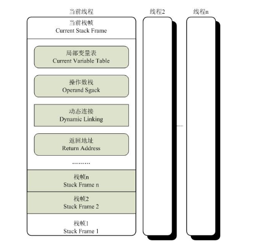

执行引擎
Table of Contents
执行引擎 是Java虚拟机最核心的组成部分之一。 虚拟机 是一个相对于 物理机 的概念，这两种机器都有代码执行能力，其区别：
- 物理机的执行引擎是 直接建立在处理器、硬件、指令集和操作系统 层面上的
- 虚拟机的执行引擎则是由 自己实现的 ，因此可以自行制定指令集与执行引擎的结构体系，并且能够执行那些不被硬件直接支持的指令集格式
在Java虚拟机规范中制定了 虚拟机字节码执行引擎 的概念模型，这个概念模型成为各种虚拟机执行引擎的统一外观。在不同的虚拟机实现里面，执行引擎在执行Java代码的时候可能会有 解释执行 (通过解释器执行)和 编译执行 (通过即时编译器产生本地代码执行)两种选择，也可能两者兼备，甚至还可能会包含几个不同级别的编译器执行引擎。但从外观上看起来，所有的Java虚拟机的执行引擎都是一致的:
- 输入：字节码文件
- 处理：字节码解析的等效过程
- 输出：执行结果
有一些虚拟机(如Sun Classic VM)的内部只存在解释器，只能解释执行 另外一些虚拟机(如BEA JRockit)的内部只存在即时编译器，只能编译执行
运行时栈帧结构
栈帧 ( Stack Frame )是用于支持虚拟机进行 方法调用和方法执行的数据结构 ，它是虚拟机运行时数据区中的 虚拟机栈 ( Virtual Machine Stack )的栈元素。栈帧存储了方法的
- 局部变量表
- 操作数栈
- 动态连接
- 方法返回地址
- …..
每一个方法从调用开始至执行完成的过程，都对应着 一个栈帧在虚拟机栈里面从入栈到出栈的过程
在编译程序代码的时候，栈帧中需要多大的局部变量表，多深的操作数栈都已经完全确定了，并且写入到方法表的Code属性之中
一个栈帧需要分配多少内存，不会受到程序运行期变量数据的影响，而仅仅取决于具体的虚拟机实现
一个线程中的方法调用链可能会很长，很多方法都同时处于执行状态。对于执行引擎来说，在活动线程中， 只有位于栈顶的栈帧才是有效的 ，称为 当前栈帧 ( Current Stack Frame )，与这个栈帧相关联的方法称为 当前方法 。执行引擎运行的所有字节码指令都只针对当前栈帧进行操作，在概念模型上，典型的栈帧结构如图所示：

局部变量表
局部变量表 是一组变量值存储空间，用于存放 方法参数和方法内部定义的局部查量 。在Java程序编译为Class文件时，就在 方法的Code属性 的max_locals数据项中确定了该方法所需要分配的局部变量表的最大容量
局部变量表的容量以 变量槽 ( Slot )为最小单位，虚拟机规范中并没有明确指明一个Slot应占用的内存空间大小，只是很有导向性地说到每个Slot都应该能存放一个boolean、byte、char、short、int、float、reference或returnAddress类型的数据，这8种数据类型，都可以使用32位或更小的物理内存来存放，但这种描述与明确指出 每个Slot占用32位长度的内存空间 是有一些差别的，它允许Slot的长度可以 随着处理器、操作系统或虚拟机的不同而发生变化 。只要保证即使在64位虚拟机中使用了64位的物理内存空间去实现一个Slot，虚拟机仍要使用对齐和补白的手段让Slot在外观上看起来与32位虚拟机中的一致
一个Slot可以存放一个32位以内的数据类型，Java中占用32位以内的数据类型有boolean、byte、char、short、int、float、reference和returnAddress8种类型 reference类型表示对一个对象实例的引用，虚拟机规范既没有说明它的长度，也没有明确指出这种引用应有怎样的结构 但一般来说，虚拟机实现至少都应当能通过这个引用做到两点 1. 从此引用中直接或间接地查找到对象在Java堆中的数据存放的起始地址索引 2. 此引用中直接或间接地查找到对象所属数据类型在方法区中的存储的类型信息 returnAddress类型目前已经很少见了，它是为字节码指令jsr、jsr_w和ret服务的，指向了一条字节码指令的地址 很古老的Java虚拟机曾经使用这几条指令来实现异常处理，现在已经由异常表代替
对于64位的数据类型，虚拟机会以 高位对齐 的方式为其 分配两个连续的Slot空间 。Java语言中明确的(reference类型则可能是32位也可能是64位)64位的数据类型只有long和double两种
把long和double数据类型分割存储的做法与“long和double的非原子性协定”中把一次long和double数据类型读写分割为两次32位读写的做法有些类似
不过，由于局部变量表建立在线程的堆栈上，是线程私有的数据，无论读写两个连续的Slot是否为原子操作，都不会引起数据安全问题
虚拟机通过 索引定位 的方式使用局部变量表，索引值的范围是从 0开始至局部变量表最大的Slot数量
- 如果访问的是 32位 数据类型的变量，索引 n 就代表了使用第 n个Slot
- 如果是 64位 数据类型的变量，则说明会同时使用 n 和 n+1 两个Slot
- 对于两个相邻的共同存放一个64位数据的两个Slot，不允许采用任何方式单独访问其中的某一个，Java虚拟机规范中明确要求了如果遇到进行这种操作的字节码序列，虚拟机应该在 类加载的校验阶段拋出异常
在方法执行时，虚拟机是使用局部变量表完成参数值到参数变量列表的传递过程的，如果执行的是实例方法(非static的方法)，那 局部变量表中第0位索引的Slot默认是用于传递方法所属对象实例的引用 ，在方法中可以通过关键字 this 来访问到这个隐含的参数。其余参数则按照参数表顺序排列，占用从1开始的局部变量Slot，参数表分配完毕后，再根据方法体内部定义的变量顺序和作用域分配其余的Slot
为了尽可能节省栈帧空间，局部变量表中的Slot是可以 重用 的，方法体中定义的变量，其作用域并不一定会覆盖整个方法体， 如果当前字节码PC计数器的值已经超出了某个变量的作用域，那这个变量对应的Slot就可以交给其他变量使用 。不过，这样的设计除了节省栈帧空间以外，还会伴随一些额外的副作用，例如，在某些情况下，Slot的复用会直接 影响到系统的垃圾收集行为
public static void main(String[] args)() { byte[] placeholder = new byte[64 * 1024 * 1024]; System.gc(); }
首先向内存填充了64MB的数据，然后通知虚拟机进行垃圾收集。在虚拟机运行参数中加上 -verbose:gc 来看看垃圾收集的过程，发现在 System.gc() 运行后并没有回收这64MB的内存，运行结果:
[GC 66846K->65824K (125632K ) ,0.0032678 secs] [Full GC 65824K-> 65746K (125632K) ,0.0064131 secs]
因为在执行 Systemgc() 时，变量 placeholder 还处于作用域之内,虚拟机自然不敢回收 placeholder 的内存。那把代码修改一下
public static void main(String[] args)() { { byte[] placeholder = new byte[64 * 1024 * 1024]; } System.gc(); }
加入了花括号之后， placeholder 的作用域被限制在花括号之内，从代码逻辑上讲，在执行 System.gc() 的时候，placeholder 已经不可能再被访问了,但执行一下这段程序,会发现运行结果如下,还是有64MB的内存没有被回收
在调用System.gc() 之前加入—行 int a=0;
public static void main(String[] args)() { { byte[] placeholder = new byte[64 * 1024 * 1024]; } int a = 0; System.gc(); }
[GC 66401K-> 65778K (125632K ) ,0.0035471 secs] [Full GC 65778K->218K (125632K) ,0.0140596 secs]
placeholder能否被回收的根本原因是:局部变量表中的Slot是否还存有关于placeholder数组对象的引用。第一次修改中，代码虽然已经离开了 placeholder 的作用域，但在此之后，没有任何对局部变量表的读写操作， placeholder原本所占用的Slot还没有被其他变量所复用 ，所以作为GC Roots—部分的局部变量表仍然保持着对它的关联。这种关联没有被及时打断，在绝大部分情况下影响都很轻微
如果遇到一个方法，其后面的代码有一些耗时很长的操作，而前面又定义了占用了大量内存、实际上已经不会再使用的变量，手动将其设置为null值(把变量对应的局部变量表Slot清空)便不见得是一个绝对无意义的操作
这种操作可以作为一种在极特殊情形(对象占用内存大、此方法的栈帧长时间不能被回收、方法调用次数达不到JIT的编译条件)下的“奇技”来使用
一本非常著名的书籍《Practical Java》中把“不使用的对象应手动赋值为null”作为一条推荐的编码规则，但是并没有解释具体的原因，很长时间之内都有读者对这条规则感到疑惑
虽然代码示例说明了 赋null值的操作 在某些情况下确实是有用的，但不应当对赋null值的操作有过多的依赖，更没有必要把它当做一个普遍的编码规则来推广。原因：
- 从编码角度讲，以恰当的变量作用域来控制变量回收时间才是最优雅的解决方法
- 从执行角度讲，使用赋null值的操作来优化内存回收是建立在对字节码执行引擎概念模型的理解之上的。在虚拟机使用解释器执行时，通常与概念模型还比较接近，但经过JIT编译器后，才是虚拟机执行代码的主要方式，赋null值的操作在经过JIT编译优化后就会被消除掉，这时候将变量设置为null就是没有意义的。字节码被编译为本地代码后，对GC Roots的枚举也与解释执行时期有巨大差别，以前面例子来看，第二种代码方式在经过JIT编译后，System.gc()执行时就可以正确地回收掉内存，无须写成手动操作
局部变量不像前面介绍的类变量那样存在 准备阶段 。即使在初始化阶段程序员没有为类变量赋值也没有关系，类变量仍然具有一个确定的初始值。但局部变量就不一样， 如果一个局部变量定义了但没有赋初始值是不能使用的 ，不要认为Java中任何情况下都存在诸如整型变量默认为0，布尔型变量默认为false等这样的默认值：
public static void main(String[] args) { int a; System.out.println(a); }
Test.java:4: error: variable a might not have been initialized System.out.println(a); ^ 1 error
编译器能在编译期间就检查到并提示这一点，即便编译能通过或者手动生成字节码的方式制造出下面代码的效果，字节码校验的时候也会被虛拟机发现而导致类加载失败
操作数栈
操作数栈 ( Operand Stack )也常称为操作栈，它是一个 后入先出 (LIFO)栈。同局部变量表一样，操作数栈的最大深度也在编译的时候写入到Code属性的max_Stacks数据项中
操作数栈的每一个元素可以是任意的Java数据类型，包括 long 和 double 。32位数据类型所占的栈容量为1，64位数据类型所占的栈容量为2。在方法执行的任何时候，操作数栈的 深度都不会超过在max_Stacks数据项中设定的最大值
当一个方法刚刚开始执行的时候，这个方法的操作数栈是空的，在方法的执行过程中，会有各种字节码指令往操作数栈中写入和提取内容，也就是出栈/入栈操作
- 做算术运算的时候是通过操作数栈来进行的
- 调用其他方法的时候是通过操作数栈来进行参数传递
比如，整数加法的字节码指令iadd在运行的时候操作数栈中最接近栈顶的两个元素已经存入了两个int型的数值
当执行这个指令时，会将这两个int值出栈并相加，然后将相加的结果入栈
操作数栈中 元素的数据类型必须与字节码指令的序列严格匹配 ，在编译程序代码的时候， 编译器要严格保证这一点 ，在 类校验阶段的数据流分析 中还要再次验证这一点
以上面的iadd指令为例，这个指令用于整型数加法，它在执行时，最接近栈顶的两个元素的数据类型必须为int型，不能出现一个long和一个float使用iadd命令相加的情况
在概念模型中，两个栈帧作为虚拟机栈的元素，是完全相互独立的。但大多虚拟机的实现里都会做一些优化处理，令两个栈帧出现一部分重叠。 让下面栈帧的部分操作数栈与上面栈帧的部分局部变量表重叠在一起，这样在进行方法调用时就可以共用一部分数据 ，无须进行额外的参数复制传递，重叠的过程如图所示：
Java虚拟机的解释执行引擎称为 基于栈的执行引擎 ,其中所指的 栈 就是 操作数栈
动态连接
每个栈帧都包含一个 指向运行时常量池中该栈帧所属方法的引用 ，持有这个引用是为了 支持方法调用过程中的动态连接 ( Dynamic Linking )
Class文件的常量池中存有大量的符号引用，字节码中的方法调用指令就以 常量池中指向方法的符号引用作为参数 。这些符号引用可以被：
- 静态解析：类加载阶段或者第一次使用的时候就转化为直接引用
- 动态链接：在每一次运行期间转化为直接引用
方法返回地址
当一个方法开始执行后，只有两种方式可以退出这个方法:
- 执行引擎遇到任意一个方法返回的字节码指令，这时候可能会有返回值传递给上层的方法调用者(调用当前方法的方法称为调用者)，是否有返回值和返回值的类型将根据遇到何种方法返回指令来决定，这种退出方法的方式称为 正常完成出口 (Normal Method Invocation Completion)
- 在方法执行过程中遇到了异常，并且这个异常没有在方法体内得到处理，无论是Java虚拟机内部产生的异常，还是代码中使用 athrow 字节码指令产生的异常，只要在本方法的异常表中没有搜索到匹配的异常处理器，就会导致方法退出，这种退出方法的方式称为 异常完成出口 (Abrupt Method Invocation Completion)。一个方法使用异常完成出口的方式退出，是 不会给它的上层调用者产生任何返回值
无论采用何种退出方式，在方法退出之后，都需要返回到方法被调用的位置，程序才能继续执行，方法返回时可能需要在栈帧中保存一些信息，用来帮助恢复它的上层方法的执行状态。一般来说
- 方法正常退出时， 调用者的PC计数器的值 可以作为返回地址，栈帧中 很可能会保存这个计数器值
- 而方法异常退出时，返回地址是要通过 异常处理器表 来确定的，栈帧中 一般不会保存这部分信息
方法退出的过程实际上就等同于把 当前栈帧出栈 ，因此退出时可能执行的操作有:
- 恢复上层方法的局部变量表和操作数栈
- 把返回值(如果有的话)压入调用者栈帧的操作数栈中
- 调整PC计数器的值以指向方法调用指令后面的一条指令等
附加信息
虚拟机规范允许具体的虚拟机实现增加一些规范里没有描述的信息到栈帧之中，例如与调试相关的信息，这部分信息完全取决于具体的虚拟机实现
在实际开发中，一般会把动态连接、方法返回地址与其他附加信息全部归为一类，称为栈帧信息
方法调用
方法调用 阶段唯一的任务就是 确定被调用方法的版本(即调用哪一个方法) ，暂时还不涉及方法内部的具体运行过程。在程序运行时，进行方法调用是最普遍、最频繁的操作，但前面已经讲过，Class文件的编译过程中不包含传统编译中的链接步骤，一切方法调用在Class文件里面存储的都只是 符号引用 ，而不是方法在实际运行时内存布局中的入口地址(相当于之前说的直接引用)。这个特性给Java带来了更强大的动态扩展能力，但也使得Java方法调用过程变得相对复杂起来，需要在类加载期间，甚至到运行期间才能确定目标方法的直接引用
在Java虚拟机里面提供了5条方法调用字节码指令，分别如下。
- invokestatic : 调用 静态 方法
- invokespecial : 调用实例构造器 <init> 方法、私有方法和父类方法
- invokevirtual : 调用所有的 虚 方法
- invokeinterface : 调用 接口 方法，会在运行时再确定一个实现此接口的对象
- invokedynamic : 先在运行时 动态解析出调用点限定符所引用的方法 ，然后再执行该方法
在此之前的4条调用指令，分派逻辑是固化在Java虚拟机内部的，而invokedynamic指令的分派逻辑是由用户所设定的引导方法决定的
解析
所有方法调用中的目标方法在Class文件里面都是一个常量池中的符号引用，在类加载的解析阶段，会将其中的一部分符号引用转化为直接引用，这种解析能成立的前提是： 方法在程序真正运行之前就有一个确定的调用版本，并且这个方法的调用版本在运行期是不可改变的 。换句话说，调用目标在程序代码写好、编译器进行编译时就必须确定下来。这类方法的调用称为解析
在Java语言中符合 编译器可知，运行期不可变 这个要求的方法，主要包括 静态 方法和 私有 方法两大类，前者与类型直接关联，后者在外部不可被访问，这两种方法各个的特点决定了它们都不可能通过继承或别的方式重写其他版本，因此它们都适合在类加载阶段进行解析
只要能被 invokestatic 和 invokespecial 指令调用的方法，都可以在解析阶段中确定唯一的调用版本，符合这个条件的有 静态方法 、 私有方法 、 实例构造器 、 父类方法 4类，它们在 类加载的时候就会把符号引用解析为该方法的直接引用 。这些方法可以称为 非虚方法 ，与之相反，其他方法称为 虚方法 (除去 final 方法，后文会提到)。下面代码中静态方法 sayHello() 只可能属于类型 StaticResolution ，没有任何手段可以覆盖或隐藏这个方法
/** * 方法静态解析演示 * * @author zzm */ public class StaticResolution { public static void sayHello() { System.out.println("hello world"); } public static void main(String[] args) { StaticResolution.sayHello(); } }
使用 javap 命令查看这段程序的字节码，会发现的确是通过 invokestatic 命令来调用 sayHello() 方法的
$ javap -verbose StaticResolution.class
.....
public static void main(java.lang.String[]);
descriptor: ([Ljava/lang/String;)V
flags: ACC_PUBLIC, ACC_STATIC
Code:
stack=0, locals=1, args_size=1
0: invokestatic #5 // Method sayHello:()V
3: return
LineNumberTable:
line 13: 0
line 14: 3
}
Java中的非虚方法还有一种，就是被final修饰的方法 虽然final方法是使用 invokevirtual指令来调用的，但是由于它无法被覆盖，没有其他版本，所以也无须对方法接收者进行多态选择，又或者说多态选择的结果肯定是唯一的 在Java语言规范中明确说明了final方法是一种非虚方法
解析调用一定是个 静态 的过程，在编译期间就完全确定，在类装载的解析阶段就会把涉及的符号引用全部转变为可确定的直接引用，不会延迟到运行期再去完成
分派
分派 调用则可能是
- 静态的
- 动态的
根据分派依据的宗量数可分为
- 单分派
- 多分派
这两类分派方式的两两组合就构成了
- 静态单分派
- 静态多分派
- 动态单分派
- 动态多分派
静态分派
/** * 方法静态分派演示 */ public class StaticDispatch { static abstract class Human { } static class Man extends Human { } static class Woman extends Human { } public void sayHello(Human guy) { System.out.println("hello,guy!"); } public void sayHello(Man guy) { System.out.println("hello,gentleman!"); } public void sayHello(Woman guy) { System.out.println("hello,lady!"); } public static void main(String[] args) { Human man = new Man(); Human woman = new Woman(); StaticDispatch sr = new StaticDispatch(); sr.sayHello(man); sr.sayHello(woman); } }
运行结果：
hello,guy! hello,guy!
Human man=new Man();
上面代码中的 Human 称为变量的 静态类型 ，后面的 Man 则称为变量的 实际类型 ，区别:
- 静态类型的变化仅仅在使用时发生，变量本身的静态类型不会被改变，并且最终的静态类型是在编译期可知的
- 而实际类型变化的结果在运行期才可确定，编译器在编译程序的时候并不知道一个对象的实际类型是什么
// 实际类型变化 Human man=new Man(); man=new Woman(); // 静态类型变化 sr.sayHello((Man)man); sr.sayHello((Woman)man);
回到最开始的代码， main() 里面的两次 sayHello() 方法调用，在方法接收者已经确定是对象 sr 的前提下，使用哪个重载版本，就完全取决于 传入参数的数量 和 数据类型 。刻意地定义了两个静态类型相同但实际类型不同的变量，但虚拟机(准确地说是编译器)在 重载时是通过参数的静态类型而不是实际类型 作为判定依据的。并且静态类型是编译期可知的，因此，在编译阶段，Javac编译器会根据参数的静态类型决定使用哪个重载版本，所以选择了 sayHello(Human) 作为调用目标，并把这个方法的符号引用写到 main() 方法里的两条 invokevirtual 指令中
所有依赖静态类型来定位方法执行版本的分派动作称为静态分派 。静态分派的典型应用是 方法重载 。静态分派发生在编译阶段，因此确定静态分派的动作实际上不是由虚拟机来执行的。另外，编译器虽然能确定出方法的重载版本，但在很多情况下这个重载版本并不是 唯一的 ，往往只能确定一个 更加合适的 版本
产生这种模糊结论的主要原因是字面量不需要定义，所以字面量没有显式的静态类型，它的静态类型只能通过语言上的规则去理解和推断
public class Overload { public static void sayHello(Object arg) { System.out.println("hello Object"); } public static void sayHello(int arg) { System.out.println("hello int"); } public static void sayHello(long arg) { System.out.println("hello long"); } public static void sayHello(Character arg) { System.out.println("hello Character"); } public static void sayHello(char arg) { System.out.println("hello char"); } public static void sayHello(char... arg) { System.out.println("hello char ..."); } public static void sayHello(Serializable arg) { System.out.println("hello Serializable"); } public static void main(String[] args) { sayHello('a'); } }
运行结果：
hello char
这很好理解， 'a' 是一个 char 类型的数据，自然会寻找参数类型为char的重载方法,如果注释掉 sayHello(char arg) 方法，那输出会变为:
hello int
这时发生了一次自动类型转换， 'a' 除了可以代表一个字符串，还可以代表数字97(字符a的Unicode数值为十进制数字97)，因此参数类型为 int 的重载也是合适的。继续注释掉 sayHello(int arg) 方法，那输出会变为:
hello long
这时发生了两次自动类型转换， 'a' 转型为整数97之后，进一步转型为长整数 97L ，匹配了参数类型为 long 的重载。实际上自动转型还能继续发生多次，按照 char->int->long->float->double 的顺序转型进行匹配。但不会匹配到 byte 和 short 类型的重载，因为 char 到 byte 或 short 的转型是不安全的。继续注释掉 sayHello(long arg) 方法，那输会变为:
hello Character
这时发生了一次自动装箱， 'a' 被包装为它的封装类型 java.lang.Character ，所以匹配到了参数类型为 Character 的重载，继续注释掉 sayHello(Character arg) 方法，那输出会变为:
hello Serializable
出现hello Serializable，是因为 java.lang.Serializable 是 java.lang.Character 类实现的一个接口，当自动装箱之后发现还是找不到装箱类，但是找到了装箱类实现了的接口类型，所以紧接着又发生一次自动转型
char可以转型成int，但是Character是绝对不会转型为Integer的，它只能安全地转型为它实现的接口或父类 Character还实现了另外一个接口java.lang.Comparable<Character> 如果同时出现两个参数分别为Serializable和Comparable<Character>的重载方法，那它们在此时的优先级是一样的 编译器无法确定要自动转型为哪种类型，会提示类型模糊，拒绝编译 程序必须在调用时显式地指定字面量的静态类型，如:sayHello((Comparable<Character>) 'a' )，才能编译通过
下面继续注释掉 sayHello(Serializable arg) 方法，输出会变为:
hello Object
这时是char装箱后转型为父类了，如果有多个父类，那将在继承关系中从下往上开始搜索，越接近上层的优先级越低。即使方法调用传入的参数值为null时，这个规则仍然适用。把 sayHello(Object arg) 也注释掉，输出将会变为:
hello char...
7个重载方法已经被注释得只剩一个了，可见 变长参数的重载优先级是最低的 ，这时候字符 'a' 被当做了一个 数组元素
这里使用的是char类型的变长参数，还可以选择int类型、Character类型、Object类型等的变长参数重载来演示一遍
但要注意的是，有一些在单个参数中能成立的自动转型，如char转型为int，在变长参数中是不成立的
解析与分派这两者之间的关系并不是二选一的排他关系，它们是在不同层次上去筛选、确定目标方法的过程。例如，静态方法会在类加载期就进行解析，而静态方法显然也是可以拥有重载版本的，选择重载版本的过程也是通过静态分派完成的
动态分派
动态分派和多态性的另外一个重要体现： 重写 ( Override )有着很密切的关联
/** * 方法动态分派演示 * @author zzm */ public class DynamicDispatch { static abstract class Human { protected abstract void sayHello(); } static class Man extends Human { @Override protected void sayHello() { System.out.println("man say hello"); } } static class Woman extends Human { @Override protected void sayHello() { System.out.println("woman say hello"); } } public static void main(String[] args) { Human man = new Man(); Human woman = new Woman(); man.sayHello(); woman.sayHello(); man = new Woman(); man.sayHello(); } }
运行结果：
man say hello woman say hello woman say hello
显然这里不可能再根据静态类型来决定，因为静态类型同样都是 Human 的两个变量 man 和 woman 在调用 sayHello() 方法时执行了不同的行为，并且变量man在两次调用中执行了不同的方法。导致这个现象的原因很明显，是这两个变量的 实际类型 不同。使用 javap 命令输出这段代码的字节码，输出结果如下所示：
$ javap -verbose DynamicDispatch.class
......
public static void main(java.lang.String[]);
descriptor: ([Ljava/lang/String;)V
flags: ACC_PUBLIC, ACC_STATIC
Code:
stack=2, locals=3, args_size=1
0: new #2 // class DynamicDispatch$Man
3: dup
4: invokespecial #3 // Method DynamicDispatch$Man."<init>":()V
7: astore_1
8: new #4 // class DynamicDispatch$Woman
11: dup
12: invokespecial #5 // Method DynamicDispatch$Woman."<init>":()V
15: astore_2
16: aload_1
17: invokevirtual #6 // Method DynamicDispatch$Human.sayHello:()V
20: aload_2
21: invokevirtual #6 // Method DynamicDispatch$Human.sayHello:()V
24: new #4 // class DynamicDispatch$Woman
27: dup
28: invokespecial #5 // Method DynamicDispatch$Woman."<init>":()V
31: astore_1
32: aload_1
33: invokevirtual #6 // Method DynamicDispatch$Human.sayHello:()V
36: return
......
}
0~15行的字节码是准备动作：
- 建立man和woman的内存空间
- 调用Man和Woman类型的实例构造器
- 将这两个实例的引用存放在第1、2个局部变量表Slot之中
这个动作也就对应了代码中的这两句:
Human man=new Man(); Human woman=new Woman();
- 16、20两句分别把 刚刚创建的两个对象的引用压到栈顶 ，这两个对象是将要执行的 sayHello() 方法的所有者，称为接收者(Receiver)
- 17和21句是方法调用指令
这两条调用指令单从字节码角度来看，无论是指令(都是 invokevirtual )还是参数(都是常量池中第22项的常量，注释显示了这个常量是 Human.sayHello() 的符号引用)完全一样的，但是这两句指令最终执行的目标方法并不相同。原因就在于invokevirtual指令的 多态查找 过程。invokevirtual指令的运行时解析过程大致分为以下几个步骤:
- 找到 操作数栈顶的第一个元素所指向的对象的实际类型 ，记作 C
- 如果 在类型C中找到与常量中的描述符和简单名称都相符的方法，则进行访问权限校验
- 如果通过则返回这个方法的直接引用，查找过程结束
- 如果不通过，则返回 java.lang.IllegalAccessError 异常
- 否则， 按照继承关系从下往上依次对C的各个父类 进行第2步的搜索和验证过程
- 如果始终没有找到合适的方法，则抛出 java.lang.AbstractMethodError 异常
由于 invokevirtual 指令执行的第一步就是在 运行期确定接收者的实际类型 ，所以两次调用中的invokevirtual指令把常量池中的类方法符号引用解析到了不同的直接引用上，这个过程就是Java语言中方法 重写 的本质。把这种 在运行期根据实际类型确定方法执行版本的分派 过程称为 动态分派
单分派与多分派
方法的接收者与方法的参数 统称为方法的 宗量 。根据分派基于多少种宗量，可以将分派划分为单分派和多分派两种
- 单分派是根据 一个宗量 对目标方法进行选择
- 多分派则是根据 多于一个宗量 对目标方法进行选择
/** * 单分派、多分派演示 */ public class Dispatch { static class QQ {} static class _360 {} public static class Father { public void hardChoice(QQ arg) { System.out.println("father choose qq"); } public void hardChoice(_360 arg) { System.out.println("father choose 360"); } } public static class Son extends Father { public void hardChoice(QQ arg) { System.out.println("son choose qq"); } public void hardChoice(_360 arg) { System.out.println("son choose 360"); } } public static void main(String[] args) { Father father = new Father(); Father son = new Son(); father.hardChoice(new _360()); son.hardChoice(new QQ()); } }
运行结果：
father choose 360 son choose qq
在 main 函数中调用了两次 hardChoice() 方法，这两次 hardChoice() 方法的选择结果在程序输出中已经显示得很清楚了
$ javap -verbose Dispatch.class
.......
public static void main(java.lang.String[]);
descriptor: ([Ljava/lang/String;)V
flags: ACC_PUBLIC, ACC_STATIC
Code:
stack=3, locals=3, args_size=1
0: new #2 // class Dispatch$Father
3: dup
4: invokespecial #3 // Method Dispatch$Father."<init>":()V
7: astore_1
8: new #4 // class Dispatch$Son
11: dup
12: invokespecial #5 // Method Dispatch$Son."<init>":()V
15: astore_2
16: aload_1
17: new #6 // class Dispatch$_360
20: dup
21: invokespecial #7 // Method Dispatch$_360."<init>":()V
24: invokevirtual #8 // Method Dispatch$Father.hardChoice:(LDispatch$_360;)V
27: aload_2
28: new #9 // class Dispatch$QQ
31: dup
32: invokespecial #10 // Method Dispatch$QQ."<init>":()V
35: invokevirtual #11 // Method Dispatch$Father.hardChoice:(LDispatch$QQ;)V
38: return
来看看编译阶段编译器的选择过程，也就是静态分派的过程。这时选择目标方法的依据有两点:
- 静态类型是 Father 还是 Son
- 方法参数是 QQ 还是 360
这次选择结果的最终产物是产生了两条 invokevirtual 指令，两条指令的参数分别为常量池中指向 Father.hardChoice(360) 及 Father.hardChoice(QQ) 方法的符号引用。因为是根据两个宗量进行选择，所以Java语言的 静态分派属于多分派类型
运行阶段虚拟机的选择，也就是动态分派的过程。在执行 son.hardChoice(newQQ()) 这句代码时，更准确地说，是在执行这句代码所对应的 invokevirtual 指令时，由于编译期已经决定目标方法的签名必须为 hardChoice(QQ) ，虚拟机此时不会关心传递过来的参数 QQ 到底是 腾讯QQ 还是 奇瑞QQ ，因为这时 参数的静态类型、实际类型都对方法的选择 不会构成任何影响，唯一可以影响虚拟机选择的因素只有此 方法的接受者的实际类型 是 Father 还是 Son 。因为 只有一个宗量作为选择依据 ，所以Java语言的 动态分派属于单分派类型
总之：1.8之前的Java语言是一门 静态多分派、动态单分派 的语言
JDK1.8之前而是通过内置动态语言(如JavaScript)执行引擎的方式来满足动态性的需求 但是Java虚拟机层面上则不是如此，在JDK 1.7中实现的JSR-292里面就已经开始提供对动态语言的支持了 JDK 1.7中新增的invokedymmic指令也成为了最复杂的一条方法调用的字节码指令
动态分派的实现
由于动态分派是非常频繁的动作，而且动态分派的方法版本选择过程需要运行时在类的方法元数据中搜索合适的目标方法，因此在虚拟机的实际实现中基于性能的考虑，大部分实现都不会真正地进行如此频繁的搜索。面对这种情况，最常用的 稳定优化 手段就是为 类在方法区中建立一个虚方法表 ( Vritual Method Table ，也称为 vtable ，与此对应的，在 invokeinterface 执行时也会用到接口方法表 Inteface Method Table ，简称 itable )，使用 虚方法表索引 来代替元数据查找以提高性能。虚方法表结构示例，如图所示：
虚方法表中存放着 各个方法的实际入口地址 。如果某个方法在子类中没有被重写，那子类的虚方法表里面的地址入口和父类相同方法的地址入口是一致的，都指向父类的实现入口。如果子类中重写了这个方法，子类方法表中的地址将会替换为指向子类实现版本的入口地址
- Son重写了来自Father的全部方法，因此Son的方法表没有指向Father类型数据的箭头
- 但是Son和Father都没有重写来自Object的方法，所以它们的方法表中所有从Object继承来的方法都指向了Object的数据类型
为了程序实现上的方便，具有相同签名的方法，在父类、子类的虚方法表中都应当具有一样的索引序号，这样当类型变换时，仅需要变更查找的方法表，就可以从不同的虚方法表中按索引转换出所需的入口地址
方法表一般在类加载的连接阶段进行初始化，准备了类的变量初始值后，虚拟机会把该类的方法表也初始化完毕
虚拟机除了使用方法表之外,在条件允许的情况下,还会使用内联缓存( Inline Cache )和基于“类型继承关系分析” ( Class Hierarchy Analysis,CHA ) 技术的守护内联( Guarded Mining ) 两种非稳定的“激进优化”手段来获得更高的性能
动态类型语言支持
Java虚拟机毫无疑问是Java语言的运行平台，但它的使命并不仅限于此，早在1997年出版的《Java虚拟机规范》中就规划了这样一个愿景:“在未来，我们会对Java虚拟机进行适当的扩展，以便更好地支持其他语言运行于Java虚拟机之上”。而目前确实已经有许多 动态类型 语言运行于Java虚拟机之上了，如 Clojure 、 Groovy 、 Jython 和 JRuby 等，能够在同一个虚拟机上可以达到静态类型语言的严谨性与动态类型语言的灵活性，这是一件很美妙的事情
但遗憾的是， Java虚拟机层面对动态类型语言的支持一直都有所欠缺 ，主要表现在 方法调用 方面: JDK1.7以前的字节码指令集中，4条方法调用指令( invokevirtual 、 invokespecial 、 invokestatic 、 invokeinterface )的第一个参数都是 被调用的方法的符号引用 (CONSTANT_Methodref_info或者CONSTANT_InterfaceMethodref_info常量)， 方法的符号引用在编译时产生，而动态类型语言只有在运行时才能确定接收者类型 。这样，在Java虚拟机上实现的动态类型语言就不得不使用其他方式( 如编译时留个占位符类型，运行时动态生成字节码实现具体类型到占位符类型的适配 )来实现，这样势必让动态类型语言实现的复杂度增加，也可能带来额外的性能或者内存开销
尽管可以利用一些办法(如CallSiteCaching)让这些开销尽量变小，但这种底层问题终归是应当在虚拟机层次上去解决才最合适，因此在Java虚拟机层面上提供动态类型的直接支持就成为了Java平台的发展趋势之一，这就是JDK1.7(JSR-292)中 invokedynamic 指令以及 java.lang.invoke 包出现的技术背景
java.lang.invoke包
JDK1.7实现了JSR-292，新加入的 java.lang.invoke 包就是JSR-292的一个重要组成部分，这个包的主要目的是在之前单纯依靠符号引用来确定调用的目标方法这种方式以外，提供一种新的 动态确定目标方法的机制 ，称为 MethodHandle 。不妨把 MethodHandle 与C/C++中的 FunctionPointer ，或者C#里面的 Delegate 类比一下。如果要实现一个带谓词的排序函数，在C/C++中常用的做法是把谓词定义为函数，用函数指针把谓词传递到排序方法，如下:
void sort(int list[], const int size, int(*compare)(int,int));
但Java语言做不到这一点，即没有办法单独地把一个函数作为参数进行传递。普遍的做法是设计一个带有 compare() 方法的 Comparator 接口，以实现了这个接口的对象作为参数，例如Collections.sort()就是这样定义的:
void sort (List list, Comparator c);
不过，在拥有 MethodHandle 之后，Java语言也可以拥有类似于函数指针或者委托的方法别名的工具了。下面代码演示了 MethodHandle 的基本用途，无论 obj 是何种类型(临时定义的 ClassA 或是实现 PrintStream 接口的实现类 System.out )，都可以正确地调用到 println() 方法
import java.lang.invoke.MethodHandle; import java.lang.invoke.MethodHandles; import java.lang.invoke.MethodType; public class MethodHandleTest { static class ClassA { public void println(String s) { System.out.println(s); } } public static void main(String[] args) throws Throwable { Object obj = System.currentTimeMillis() % 2 == 0 ? System.out : new ClassA(); // 无论obj最终是哪个实现类，下面这句都能正确调用到println方法。 getPrintlnMH(obj).invokeExact("icyfenix"); } private static MethodHandle getPrintlnMH(Object receiver) throws Throwable { // MethodType：代表“方法类型” // 包含了方法的返回值（methodType()的第一个参数） // 和具体参数（methodType()第二个及以后的参数）。 MethodType mt = MethodType.methodType(void.class, String.class); // lookup()方法来自于MethodHandles.lookup // 这句的作用是在指定类中查找符合给定的方法名称、方法类型，并且符合调用权限的方法句柄。 // 因为这里调用的是一个虚方法，按照Java语言的规则， // 方法第一个参数是隐式的，代表该方法的接收者，也即是this指向的对象， // 这个参数以前是放在参数列表中进行传递，现在提供了bindTo()方法来完成这件事情。 return MethodHandles.lookup().findVirtual(receiver.getClass(), "println", mt).bindTo(receiver); } }
实际上方法 getPrintlnMH() 中模拟了 invokevirtual 指令的执行过程，只不过它的分派逻辑并非固化在Class文件的字节码上，而是通过一个具体方法来实现。而这个方法本身的返回值( MethodHandle 对象)，可以视为对最终调用方法的一个 引用 。以此为基础，有了MethodHandle就可以写出类似于下面这样的函数声明:
void sort (List list, MethodHandle compare);
使用 MethodHandle 并没有什么困难，不过看完它的用法之后，相同的事情，用反射不是早就可以实现了吗?
确实，仅站在Java语言的角度来看， MethodHandle 的使用方法和效果与 Reflection 有众多相似之处，不过，它们还是有以下这些区别:
- Reflection是在 模拟Java代码层次的方法调用 ，而MethodHandle是在 模拟字节码层次的方法调用 。在 MethodHandles.lookup 中的3个方法: findStatic() 、 findVirtual() 、 findSpecial() 正是为了对应于 invokestatic 、 invokevirtual 、 invokeinterface 和 invokespecial 这几条字节码指令的 执行权限校验行为 ，而这些底层细节在使用ReflectionAPI时是不需要关心的
- Reflection中的 java.lang.reflect.Method 对象远比MethodHandle机制中的 java.lang.invoke.MethodHandle 对象所包含的信息多
- java.lang.reflect.Method : 是 方法在Java一端的全面映像 ，包含了 方法的签名 、 描述符 以及 方法属性表中各种属性的Java端表示方式 ，还包含 执行权限等的运行期信息
- java.lang.invoke.MethodHandle : 仅仅包含与 执行该方法相关的信息
- 由于MethodHandle是对 字节码的方法指令调用的模拟 ，所以理论上 虚拟机在这方面做的各种优化 (如方法内联)，在MethodHandle上也应当可以采用类似思路去支持(但目前实现还不完善)。而通过反射去调用方法则不行
- 最关键的一点还在于去掉前面讨论施加的前提 仅站在Java语言的角度来看 :
- Reflection API的设计目标是 只为Java语言服务 的
- 而MethodHandle则设计成可 服务于所有Java虚拟机之上的语言 ，其中也包括Java语言
invokedynamic指令
上面使用 MethodHandle 的示例代码反编译后也不会看见 invokedynamic 的身影，它的应用之处在哪里呢?
在某种程度上， invokedynamic 指令与 MethodHandle 机制的作用是一样的，都是为了解决原有4条 invoke 指令方法分派规则固化在虚拟机之中的问题，把如何查找目标方法的决定权从虚拟机转嫁到具体用户代码之中，让用户(包含其他语言的设计者)有更高的自由度。而且，它们两者的思路也是可类比的，可以把它们想象成为了达成同一个目的：
- MethodHandle: 采用上层Java代码和API来实现
- invokedynamic: 用字节码和Class中其他属性、常量来完成
每一处含有invokedynamic指令的位置都称做 动态调用点 (Dynamic Call Site)，这条指令的第一个参数不再是代表方法符号引用的CONSTANT_Methodref_info常量，而变为JDK1.7新加入的 CONSTANT_InvokeDynamic_info 常量，从这个新常量中可以得到3项信息:
- BootstrapMethod : 引导方法，存放在新增的 BootstrapMethods 属性中
- 引导方法是有固定的参数，并且返回是 java.langinvoke.CallSite 对象，这个代表真正要执行的目标方法调用
- MethodType : 方法类型
- 名称
根据CONSTANT_InvokeDynamic_info常量中提供的信息，虚拟机可以找到并且执行引导方法，从而获得一个CallSite对象，最终调用要执行的目标方法
import static java.lang.invoke.MethodHandles.lookup; import java.lang.invoke.CallSite; import java.lang.invoke.ConstantCallSite; import java.lang.invoke.MethodHandle; import java.lang.invoke.MethodHandles; import java.lang.invoke.MethodType; public class InvokeDynamicTest { public static void main(String[] args) throws Throwable { INDY_BootstrapMethod().invokeExact("icyfenix"); } public static void testMethod(String s) { System.out.println("hello String:" + s); } public static CallSite BootstrapMethod(MethodHandles.Lookup lookup, String name, MethodType mt) throws Throwable { return new ConstantCallSite(lookup.findStatic(InvokeDynamicTest.class, name, mt)); } private static MethodType MT_BootstrapMethod() { return MethodType.fromMethodDescriptorString( "(Ljava/lang/invoke/MethodHandles$Lookup;Ljava/lang/String;Ljava/lang/invoke/MethodType;)Ljava/lang/invoke/CallSite;", null); } private static MethodHandle MH_BootstrapMethod() throws Throwable { return lookup().findStatic(InvokeDynamicTest.class, "BootstrapMethod", MT_BootstrapMethod()); } private static MethodHandle INDY_BootstrapMethod() throws Throwable { CallSite cs = (CallSite) MH_BootstrapMethod().invokeWithArguments(lookup(), "testMethod", MethodType.fromMethodDescriptorString( "(Ljava/lang/String;)V", null)); return cs.dynamicInvoker(); } }
这段代码与前面 MethodHandleTest 的作用基本上是一样的
由于 invokedynamic 指令所面向的使用者并非Java语言，而是其他Java虚拟机之上的动态语言 因此仅依靠Java语言的编译器Javac没有办法生成带有invokedynamic指令的字节码 曾经有一个java.dyn.InvokeDymmic的语法糖可以实现，但后来被取消了 要使用Java语言来演示invokedynamic指令只能用一些变通的办法 John Rose编写了一个把程序的字节码转换为使用 invokedynamic 的简单工具 INDY 来完成这件事情 要使用这个工具来产生最终要的字节码，因此这个示例代码中的方法名称不能随意改动，更不能把几个方法合并到一起写，因为它们是要被INDY工具读取的
把上面代码编译、再使用 INDY 转换后重新生成的字节码：
从main()方法的字节码可见，原本的方法调用指令已经替换为 invokedynamic ,它的参数为 第123项常量 (第二个值为0的参数在HotSpot中用不到与invokeinterface指令那个值为0的参数一样都是占位的)
2 :invokedynamic#123 ,0//InvokeDynamic#0 :testMethod :(Ljava/lang/String ; )V
从常量池中可见，第123项常量显示 #123=InvokeDynamic#0:#121 说明它是一项CONSTANT_InvokeDynamic_info类型常量
- #0 ：引导方法取 BootstrapMethods 属性表的第 0 项(示例中仅有一个引导方法，即BootstrapMethod())
- #121 ：引用第121项类型为CONSTANT_NameAndType_info的常量，从这个常量中可以获取方法名称和描述符，即后面输出的 testMethod:(Ljava/lang/String;)V
再看一下 BootstrapMethod() ，这个方法Java源码中没有，是INDY产生的，但是它的字节码很容易读懂，逻辑
- 调用 MethodHandles$Lookup的findStatic() 方法，产生 testMethod() 方法的 MethodHandle
- 用它创建一个 ConstantCallSite 对象
- 这个对象返回给 invokedynamic 指令，实现对 testMethod() 方法的调用
掌控方法分派规则
invokedynamic指令与前面4条 invoke* 指令的最大差别就是 它的分派逻辑不是由虚拟机决定的，而是由程序员决定
class GrandFather { void thinking() { System.out.println("i am grandfather"); } } class Father extends GrandFather { void thinking() { System.out.println("i am father"); } } class Son extends Father { void thinking() { // 请读者在这里填入适当的代码（不能修改其他地方的代码） // 实现调用祖父类的thinking()方法，打印"i am grandfather" } }
在JDK1.7之前，使用纯粹的Java语言很难处理这个问题(直接生成字节码就很简单，如使用 ASM 等字节码工具)，原因是在 Son 类的 thinking() 方法中 无法获取一个实际类型是 GrandFather 的对象引用 ，而 invokevirtual 指令的分派逻辑就是 按照方法接收者的实际类型进行分配 ，这个逻辑是固化在虚拟机中的，程序员无法改变。在JDK1.7中，可以使用下面代码的程序来解决这个问题：
import static java.lang.invoke.MethodHandles.lookup; import java.lang.invoke.MethodHandle; import java.lang.invoke.MethodType; class Test { class GrandFather { void thinking() { System.out.println("i am grandfather"); } } class Father extends GrandFather { void thinking() { System.out.println("i am father"); } } class Son extends Father { void thinking() { try { MethodType mt = MethodType.methodType(void.class); MethodHandle mh = lookup().findVirtual(GrandFather.class, "thinking", mt).bindTo(new GrandFather()); mh.invokeExact(); } catch (Throwable e) { } } } public static void main(String[] args) { (new Test().new Son()).thinking(); } }
i am a grandfather
执行引擎
许多Java虚拟机的执行引擎在执行Java代码的时候都有 解释 执行(通过解释器执行)和 编译 执行(通过即时编译器产生本地代码执行)两种选择
解释执行
Java语言经常被人们定位为 解释 执行的语言，在Java初生的JDK1.0时代，这种定义还算是比较准确的，但当主流的虚拟机中都包含了即时编译器后，Class文件中的代码到底会被解释执行还是编译执行，就成了只有虚拟机自己才能准确判断的事情。后来，Java也发展出了可以直接生成本地代码的编译器(如GNU Compiler for the Java)，而C/C++语言也出现了通过解释器执行的版本(如CINT)，这时候再笼统地说 解释 执行，对于整个Java语言来说就成了几乎是没有意义的概念，只有确定了谈论对象是某种具体的Java实现版本和执行引擎运行模式时，谈解释执行还是编译执行才会比较确切
不论是解释还是编译，也不论是物理机还是虚拟机，对于应用程序，机器都不可能如人那样阅读、理解，然后就获得了执行能力。大部分的程序代码到物理机的目标代码或虚拟机能执行的指令集之前，都需要经过下图中的各个步骤:
- 左边那条分支，就是解释执行的过程
- 右边那条分支，就是传统编译原理中程序代码到目标机器代码的生成过程
如今，基于物理机、Java虚拟机，或者非Java的其他高级语言虚拟机(HLLVM)的语言，大多都会遵循这种基于现代经典编译原理的思路：在执行前先对程序源码进行 词法分析 和 语法分析 处理，把源码转化为 抽象语法树 (AST)。对于一门具体语言的实现来说：
- 词法分析 、 语法分析 以至后面的 优化器 和 目标代码生成器 都可以选择独立于执行引擎，形成一个完整意义的 编译器 去实现，这类代表是C/C++语言
- 把其中一部分步骤(如 生成抽象语法树之前的步骤 )实现为一个半独立的编译器，这类代表是Java语言
- 把 这些步骤和执行引擎全部集中封装在一个封闭的黑匣子 之中，如大多数的JavaScript执行器
Java语言中:
- Javac编译器 ：完成了程序代码经过 词法分析 、 语法分析 到 抽象语法树 ,再遍历语法树生成线性的 字节码指令流 的过程。这一切都是Java虚拟机之外
- 解释器 ：在虚拟机的内部,所以Java程序的编译就是半独立的实现
基于栈的指令集
Java编译器输出的指令流，基本上是一种 基于栈的指令集架构 (ISA)，指令流中的指令大部分都是 零地址指令 ，它们依赖 操作数栈 进行工作
与之相对的另外一套常用的指令集架构是基于寄存器的指令集，最典型的就是x86的二地址指令集
现在主流PC机中直接支持的指令集架构，这些指令依赖寄存器进行工作
使用这两种指令集计算 1+1 的结果，基于栈的指令集会是这样子的:
iconst_1 iconst_1 iadd istore_0
- 两条 iconst_1 指令连续把两个常量1 压入栈 后
- iadd 指令把栈顶的两个值 出栈 、相加，然后把结果放回 栈顶
- istore_0 把栈顶的值放到 局部变量表的第0个Slot 中
如果基于寄存器，那程序可能会是这个样子：
mov eax ,1 add eax ,1
- mov 指令把 EAX寄存器 的值设为1
- add 指令再把这个值加1, 结果就保存在 EAX寄存器 里面
基于栈的指令集优缺点
- 优点:
- 可移植 ，寄存器由硬件直接提供，程序直接依赖这些硬件寄存器则不可避免地要受到硬件的约束。例如，现在32位80x86体系的处理器中提供了8个32位的寄存器，而ARM体系的CPU提供了16个32位的通用寄存器。如果使用栈架构的指令集，用户程序不会直接使用这些寄存器，就可以由虚拟机实现来自行决定把一些访问最频繁的数据(程序计数器、栈顶缓存等)放到寄存器中以获取尽量好的性能，这样实现起来也更加简单一些
- 代码相对更加紧凑 ：字节码中每个字节就对应一条指令，而多地址指令集中还需要存放参数
- 编译器实现更加简单 ：不需要考虑空间分配的问题，所需空间都在栈上操作
- 缺点：
- 执行速度相对来说会稍慢一些 ：由于 指令数量 和 内存访问 的原因，所以导致了栈架构指令集的执行速度会相对较慢：
- 虽然栈架构指令集的代码非常紧凑，但是完成相同功能所需的指令数量一般会比寄存器架构多，因为出栈、入栈操作本身就产生了相当多的指令数量
- 更重要的是，栈实现在内存之中，频繁的栈访问也就意味着频繁的内存访问，相对于处理器来说，内存始终是执行速度的瓶颈。尽管虚拟机可以采取栈顶缓存的手段，把最常用的操作映射到寄存器中避免直接内存访问，但这也只能是优化措施而不是解决本质问题的方法
- 执行速度相对来说会稍慢一些 ：由于 指令数量 和 内存访问 的原因，所以导致了栈架构指令集的执行速度会相对较慢：
这里说的是物理机器上的寄存器，也有基于虚拟机寄存器的实现，如Android平台的Dalvik VM
即使是基于寄存器的虚拟机，也希望把虚拟机寄存器尽量映射到物理寄存器上以获取尽可能高的性能
基于栈的解释器执行过程
public int calc() { int a = 100; int b = 200; int c = 300; return (a + b) * c; }
使用 javap 命令后得如下反编译代码：
public int calc(); //.... Code: stack=2, locals=4, args_size=1 0: bipush 100 2: istore_1 3: sipush 200 6: istore_2 7: sipush 300 10: istore_3 11: iload_1 12: iload_2 13: iadd 14: iload_3 15: imul 16: ireturn //...
下面用图对该过程进行描述：
上面的执行过程仅仅是一种概念模型，虚拟机最终会对执行过程做一些优化来提高性能，实际的运作过程不一定完全符合概念模型的描述
更准确地说，实际情况会和上面描述的概念模型差距非常大，这种差距产生的原因是虚拟机中解析器和即时编译器都会对输入的字节码进行优化
例如在HotSpot虚拟机中,有很多以"fast_"开头的非标准字节码指令用于合并、替换输入的字节码以提升解释执行性能,而即时编译的优化手段更加花样繁多
从这段程序的执行中也可以看出栈结构指令集的一般运行过程,整个运算过程的中间变量都以 操作数栈的出栈、入栈 为 信息交换 途径